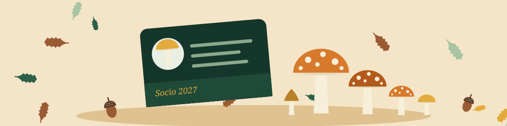

Biblioteca
I grandi libri dei funghi, liberi da leggere.
Inzenga, Bresadola, Vittadini e gli altri classici da sfogliare o da leggere trascritti, oltre 160 tavole storiche ripulite e le pubblicazioni scientifiche sui funghi del Sud.
Dal 1987 studiamo i funghi, dal bosco al microscopio. Vieni a scoprire cosa nasce sotto i tuoi piedi in Sicilia, con micologi accreditati e un gruppo che ti fa sentire a casa.
Le novità: usa le frecce o scorri di lato, le schede girano senza fine; tocca la foto per ingrandirla.
I grandi libri di micologia e le tavole storiche, liberi da sfogliare. Gli strumenti di studio sono nell’area soci.
Inzenga, Bresadola, Vittadini e gli altri classici da sfogliare o da leggere trascritti, oltre 160 tavole storiche ripulite e le pubblicazioni scientifiche sui funghi del Sud.
Serate in sede, gite nel bosco, mostre e ore al microscopio: così passiamo l'anno. C'è posto anche per te.
L'Associazione Micologica Giuseppe Inzenga APS è il gruppo palermitano dell'A.M.B., l'Associazione Micologica Bresadola.
L'associazione Inzenga conta micologi accreditati, che fanno parte del comitato scientifico, e soci, appassionati e grandi ricercatori di funghi, esperti e autodidatti. Ogni lunedì e giovedì ci si vede in sede per conversazioni, corsi e determinazione.
Cerchiamo persone curiose, con voglia di imparare e di stare in buona compagnia. Chi frequenta un corso diventa socio, come richiede la legge: è il modo più semplice per restare.
Micologi accreditati, un comitato scientifico, microscopio e libri in sede, uscite nel bosco: qui le conoscenze si toccano, si annusano e si verificano.
65 soci attivi nel 2026, dal principiante al ricercatore: nessuno resta indietro e chi sa di più condivide volentieri.
Serate fisse, corsi, gite, mostra e stage, con un calendario chiaro e ruoli precisi: chi arriva trova subito un modo per dare una mano.
Un Consiglio Direttivo rinnovato a febbraio 2026 e un Comitato Scientifico che segue le determinazioni.
Chi guida l'associazione, tutti insieme
Guida l'associazione e organizza corsi, gite, mostre e stage.
Conferma i ritrovamenti sulle foto e in sede, al microscopio e sui libri.
Scopri il calendario dell'associazione per conoscere tutto ciò che facciamo insieme agli associati.
Iscriviti ai corsi per ottenere il tesserino di raccolta.
Funghi, tartufi e corsi di aggiornamento per il rinnovo del tesserino.
Vuoi raccogliere in regola e imparare a riconoscere i funghi con sicurezza? I nostri corsi, tenuti da docenti accreditati, ti portano fino al tesserino.
Scegli il corso che ti interessa e iscriviti adesso. È gratuito e non ti impegna a nulla.
Qui trovi i corsi aperti alle preiscrizioni.
Scegli a quale corso sei interessato. Non è ancora l'iscrizione e non devi essere socio: quando raggiungeremo 15 preiscrizioni, ti contatteremo con date, luogo e quota.
Le locandine degli ultimi corsi: toccane una per ingrandirla.
Piccole schede per capire i funghi di Sicilia senza essere esperti: una domanda, una risposta chiara, le fonti. Scegli un argomento o cerca per parola.

Siamo micologi, appassionati e curiosi che si ritrovano da quasi quarant'anni. Da socio partecipi a tutto quello che facciamo. Non serve sapere già qualcosa di funghi: si comincia con la curiosità.
Un anno da metà settembre a metà giugno, con appuntamenti per ogni modo di amare i funghi.
Usiamo i tuoi dati solo per ricontattarti sull'iscrizione. Non li mostriamo sul sito e non li diamo a nessuno.
Come trattiamo i dati che ci lasci quando ci scrivi, ti preiscrivi a un corso o chiedi di diventare socio. Ultimo aggiornamento: ottobre 2026.
L'Associazione Micologica G. Inzenga APS, con sede in via S. Domenico Savio 4, 90145 Palermo (presso l'Oratorio dei Salesiani «Villaurea»). Puoi scriverci a gruppomic.inzenga@libero.it per qualsiasi domanda sui tuoi dati.
Solo quelli che inserisci tu nei moduli del sito: nome e cognome, email, comune di residenza, il corso a cui sei interessato, i motivi per cui vuoi diventare socio e il testo del messaggio che ci scrivi. Non ti chiediamo dati sensibili e non raccogliamo dati di minori senza il consenso di chi esercita la responsabilità genitoriale.
Non usiamo i tuoi dati per pubblicità, non li vendiamo e non li cediamo a terzi per scopi commerciali.
Solo i soci incaricati della segreteria e del consiglio direttivo, che li trattano per le finalità sopra indicate. Possono trattare i dati anche i fornitori tecnici che ospitano il sito e raccolgono i moduli, in qualità di responsabili del trattamento. I dati non vengono diffusi.
Puoi chiederci in ogni momento di accedere ai tuoi dati, correggerli, cancellarli, limitarne l'uso, riceverli in formato leggibile (artt. 15-20 GDPR) o opporti al trattamento. Puoi anche ritirare il consenso, senza che questo tolga valore a quanto è stato fatto prima. Per farlo scrivi a gruppomic.inzenga@libero.it. Se pensi che i tuoi dati non siano trattati correttamente, puoi presentare reclamo al Garante per la protezione dei dati personali (garanteprivacy.it).
Il sito non usa cookie di profilazione né strumenti di statistica. Salva soltanto nel tuo browser la scelta del tema chiaro o scuro, per ricordarla alla visita successiva. Non è un dato personale e non viene inviato a nessuno.
Le serate sono il lunedì e il giovedì. Scrivici per un corso, per una mostra nel tuo comune o anche solo per capire se fa per te: ti rispondiamo volentieri.
Queste parti restano dietro accesso e nascoste ai motori di ricerca.
Gli strumenti didattici (chiave, specie, caratteri, strumenti di laboratorio) e l’Osservatorio. In questa prima fase è aperta al Comitato scientifico, che li sta rivedendo; poi si aprirà a tutti i soci.
Non ci si iscrive dal sito: l’accesso lo crea l’associazione e te lo consegna. Al primo ingresso scegli una password tua.
Password dimenticata? Chiedi al Presidente o al Vicepresidente: te ne danno una nuova.
Per il Consiglio Direttivo: ruoli e vice, scadenze e pratiche, calendario, stato dei lavori, documenti, prima nota e aggiornamento del sito. Si entra con la carica e la password personale.